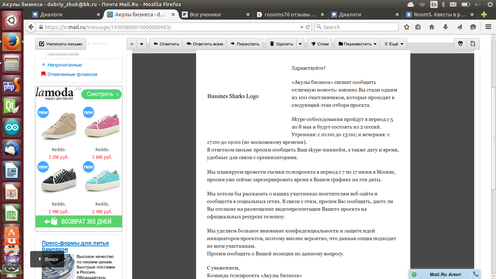
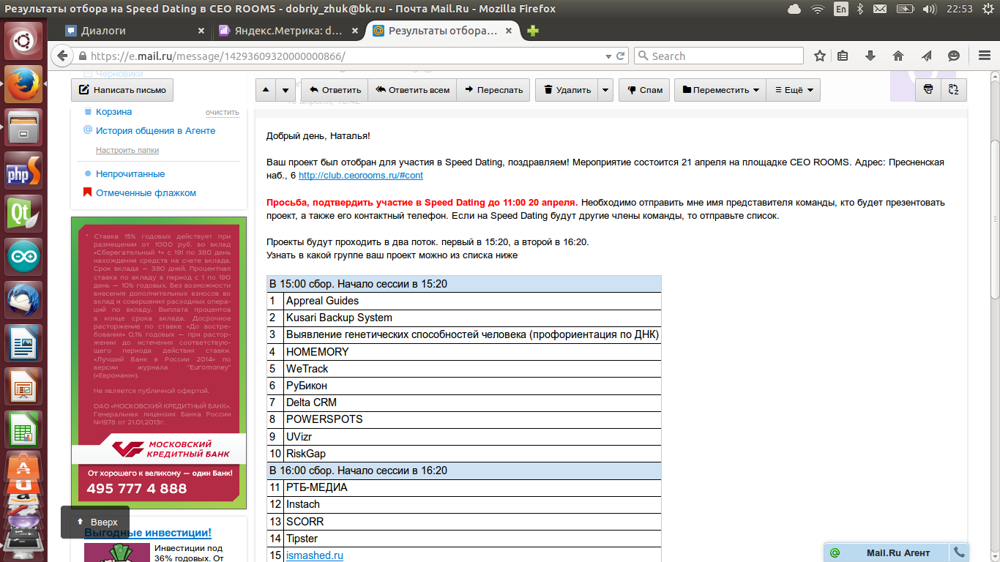
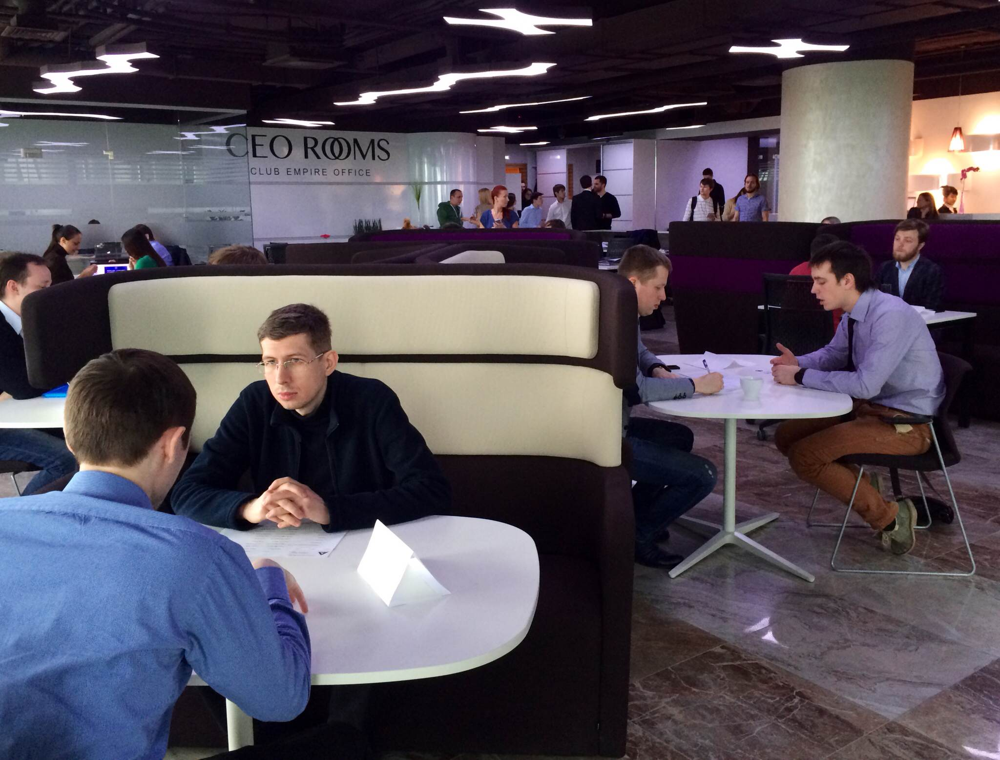
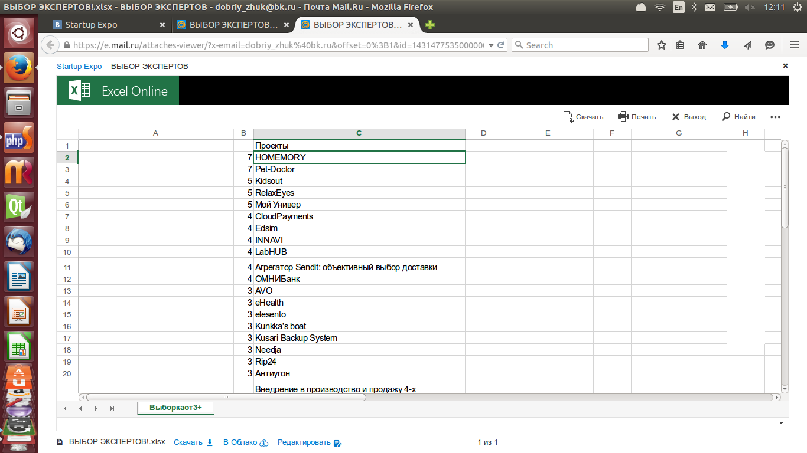
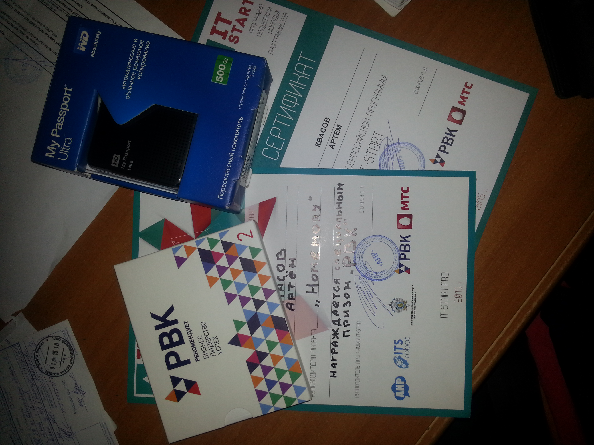

Немного приятностей для проекта
30 апреля 2015
Где найти инвестора?
Чем больше ищешь инвестора, тем меньше хочется его найти. Да это немного странно, но, к сожалению, наш проект столкнулся именно с этим. Да с одной стороны инвестор даст продвижение, толчок вперед, уйму опыта. А с другой стороны это уже денежная составляющая, которую надо будет очень добросовестно решать.
Каким же образом мы стали искать инвестора и для чего? Основной целью всех моих выступлений был не поиск инвестирования, получения горы денег и тд. Основной целью было получение опыта презентации и осознавание того, что реально происходит в мире. Первым мероприятием, участие в котором подтвердили, стал speed dating, проводимый компанией RUSBASE: 10 фондов/бизнес-ангелов, огромные деньги и наш проект. Всего три минуты на выступление. Навык презентации уж я точно отточил.
  Пригласительное письмо. Мы четвертые. Правда я стал Натальей, почему-то=)Мы надеялись получить фидбеки от ивесторов, на деньги я не рассчитывал, да и не хотел. Выступление как по мне оказалось на 4 с минусом. Кто-то говорил, что наш проект - это круто, кто-то выискиывал конкурентов для нас, а кто-то помогал советом. Но, честно говоря, чего то глобального для себя я не вынес из этой встречи. Все банально и практически ничего нового. Всего лишь очередной раз убедился, что лучше ни от кого не зависеть и втаскивать наш проект самим по-максимуму!
Но это оказался не конец. На следующий день другой инвестор (который не был на данном мероприятии), нашел наш проект в сети и решил узнать подробности. Проект его заинтересовал, но видите ли 5% от компании за его 1млн 300 оказалось мало. Мы решили, что с данным инвестором нам не по пути. Не очень то мы хотим раздавать свою компании, не успевши почувствовать удовольствия от ее работы. Для себя можно сделать один хороший вывод: инвестора найти очень легко, лишь бы идея была адекватной. Поэтому сейчас мы полностью будем сосредотачиваться на продукте и не обращать внимание на деньги, пока в этом не станет острой необходимости. А необходимость появится когда мы начнем печатать по 100-1000 устройств в месяц. Тогда и задумаемся.
Также мы не забыли выступить на конкурсе StartUP Expo Евразия. На этапе отбора мы взяли 7 голосов (максимум). Успешно выступили, и особо то ничего нового для себя не узнали...как обычно - надо работать, работать и работать!
21 апреля / 20 мая 2015
IT-школа и отзывы
Целью данной IT - школы для себя я ставил выступление перед инвесторами и обретение новых знакомств. И знаете все оказалось достаточно неплохо. Куча бесплатных плюшек, кропотливая проработка презентации, душный зал и мы-вторые! Это было прекрасное достижение! Ко всему прочему нас пригласили в Бизнес-Инкубатор Высшей школы экономики, от которого нам, к сожалению, пришлось отказаться.
Заинтересованность в новых контактах по мере успеха не пропала. Я обрел к себе в знакомые заместителя губернатора Ярославской области, директора Б-И Вышки, и еще несколько менее крупных человеков. Школа принесла свои плоды!
Но самое главное было не это! Самое главное, что после нашей презентации ко мне подошел один из организаторов и сказал, что готов купить устройства прямо сейчас и готов заплатить деньги! Вот, что значит успех! Это я считаю самым главным и важным достижением этих дней! Люди интересуются и готовы покупать. Пора значит тащить рынок.
 Наши призы. Правда фамилию мою искаверкали...15 апреля 2015
Где взять первых клиентов?
Уже второй бизнес у меня начинается с крупных заказов. Не успел я опубликовать рекламу в бесплатных сообществах как мне сразу же прилеает оптовый заказ вида:
Добрый день. Хотел бы купить оптом. Работаете ли вы с частными лицами? Какие условия -минимальная сумма заказа, оплата. Пришлите, пожалуйста, оптовый прайс. С уважением, ***
Не смотря на то, что публикация на Boomstarter мне пока что не принесла ровным счетом ничего, я уже вижу заинтересованность людей в нашем проекте, и это не может не радовать! Да к тому же я с каждым днем все больше разочаровываюсь в бумстартере, потому что они не продвигают проекты как кикстартер, они заставляют людей продвигать свои же проекты (грубо говоря, я создал проект, я его продвинул, а потом заплатил в сумме 23%). А теперь уважаемые знатоки вопрос: на кой черт я должен платить 23%, когда могу получать деньги со своего сайта? Но вернемся к первоначальной теме.
На этой раз я окажусь умнее, и продумаю все бизнес-процессы заранее, начиная с полноценной разработки и заканчивая доставкой до конечного покупателя...лучше пока потянуть с клиентами и честно ответить на вышеописанный запрос, но зато потом не попасть впросак, как это было с моей недавней компанией.
15 марта 2015
На рубеже первой финишной прямой
Сегодня очередной раз я съездил в гости к своему партнеру, чтобы мы обсудили планы дальнейшего развития и посмотрели, что у нас есть на текущий момент. И знаете, все достаточно неплохо. У нас есть практически готовый прототип некоторых устройств. Что же мы делали?
Мы решили протестировать полноценно бизнес-процесс от стадии соединения геркона(выбрали для примера) к стадии оповещания об этом на странице личного кабинета пользователя. Все работает, я в восторге. Но в то же время я понимаю, что еще предстоит целая куча работы, сигнал должен не только отправляться, он должен проверяться и подтверждаться, что создает некоторые трудности в реализации, но думаю мы справимся. На данном этапе очень остро стоит вопрос с оболочкой для устройства. Никогда в жизни не проектировал и уж тем более не создавал пластиковые корпуса для устройств, а сейчас походу придется научиться. Для простоты пока что я выбрал 3d принтеры, но скорее всего от данного способа вскоре придется отказаться в силу ценового фактора.
Мы с партнером решили, что на эти две недели он начинает паять устройство, а я в свою очередь доделываю личный кабинет для пользователей. Каждый день я чувствую недостаток знаний, и прекрасно осознаю, что надо доучиваться, доучиваться и доучиваться, иначе могут возникнуть непредвиденные проблемы по мере расширения проекта. В частности при множественных запросах к одному файле на сервере я могу попасть впросак, и сервак может упасть.
В общем планы стандартные: надо работать! И уже как можно быстрее начинать тестировать устройство в реальности. Надеюсь на этой неделе успею сообразить что-нибудь с корпусом устройства и доделать полноценно сайт.
8 марта 2015
Где взять деньги для стартапа?
После нескольких месяцев работы наш проект "HOMEMORY" начинет потихоньку обретать свои черты. У нас есть готовое устройство для определения наличия тока в проводах, закрытия дверей, вскоре добавится датчик газа и датчик протечки. И само собой потихоньку встает вопрос инвестирования: где взять нормальную сумму для выпуска первой партии?
В первую очередь ответом на этот вопрос я выбрал: акселераторы. Первый акселератор, в который я подал заявку стал ФРИИ. На первоначальном этапе мой проект должен был пройти стадию преакселерации, что он успешно и сделал. Вроде как руководителям понравился проект. Дальше начниается самое сложное: подача заявки в акселератор.
Это оказалось не так просто. Я заполнил недостающие поля в заявке, потом попросил одного из аналитиков ФРИИ проверить мой проект на адекватность. Девушка сказала, что все норм, но обязательно надо переделать поле "рынок", потому что плюсом для меня такие ответы не будут. И я начал рыть. Оказалось, что считать рынок я ровным счетом не умею, я даже понятия не имею где брать информацию. С горем пополам я нашел какие-то статьи о маркетинговых исследованиях и вкинул их в свою заявку. Не самый лучший выбор, но альтернатив у меня не было. Заявка подана. Ждем...
Для стадии сбора денег я, конечно же, не обошел стороной краудфандинговые платформы. Для пробы я выбрал Boomstarter. Поля заполняются легко и поделу, правда невероятно бесит их обработка форм и то, что нельзя использовать HTML-верстку, практически всю информацию о проекте я скопировал из своей заявки в акселератор. Вроде как все хорошо, в выходные запишем видео и, наконец-то, запустим наш проект в жизнь.
7 марта 2015
Arduno UNO. С прибытием
Вот и настал тот ожидаемый день. Ко мне приехал набор-конструктор для программирования микроконтроллеров во главе с Arduino UNO
Первые дни у меня не было достаточно времени, чтобы взяться за столь интереную штуковину, и кроме того, как потестить ее работоспособность, я ничего попробовать не успел.
Но вскоре сдались экзамены, и появилось время для пробы этой вещицы во всей ее красе! Я создал пъезопищалку, банальное мигание светодиодом и регулятор яркости света.
Даже на столь малом, даже, я бы сказал, незначительном количестве опытов я осознал - почему люди полюбили эту плату, почему она стала столь востребованной. Я понял, что ее потенциал огромен, а способ ее программирования очень удобен.
12 января 2015
Пора начинать
Научившись на старых ошибках (возможно не полностью, но все-таки имея опыт за плечами), я решил, прежде чем рваться в бой с головой, протестировать актуальность данной идеи на людях. Признаться, я раньше не особо рассказывал о своих тараканах в голове, и боялся, что мои идеи могут быть украдены. На самом деле это полнейшая чушь! Никто не украдет твою идею, если она уникальна, в идею заложены твои собсвтенные взгляды, твоя реализация и твои способности, и никто не сделает продукт или услугу так, как ты представляешь это себе.
Я старался рассказывать об идее умного устройства всем, кто хоть как то интересуется моей жизнью. Первой я, конечно же, поведал об этом своей девушке. Она восприняла хорошо и подтвердила актуальность данного устройства. Хотя может она просто уже доверяет мне во всем. Далее я решил рассказать об этом родственникам, в частности бабушке. Она сказала, что для нее это была бы очень удобная вещица. Но я подумал, что продажа для пожилых этого устройства будут затруднительна для меня.
Следующий, с кем я поделился своим нейронным соединением (так создаются идеи в мозге человека) стал преподаватель физики в моем образовательном центре. Он загорелся этим, но я попросил его потерпеть и "переспать" с данной задумкой. Его ответ был получен через три дня, и он был готов также ръяно создавать новое устройство.
С преподавателем, а теперь и партнером, мы обсудили тонкости реализации, обсудили возможные проблемы в посылке сигнала на брелок о состоянии приборов (вкл/выкл) и тд.
За реалзицаю задумки устройства "HoMemory" я решился взяться более упорно и подал заявку в Фон Российский Интернет Инициатив. На удивление мне, девушка, которая говорила о моих ошибках в заполнении карточки проекта, достаточно хорошо отнеслась к данному проекту, дала ценные рекомендации, сказала обязательно подавать заявку, когда будет готов прототип, и сообщила, что похожих проектов сейчас много, и кто "первый встанет, того и тапки". Меня совершенно не испугала конкуренция. Наоборот, меня невероятно порадовало то, что оказывается похожие проекты набирают популярность, и надо срочно брать все в свои руки.
Использовать в качестве микроконтроллера я решил Arduino UNO(для меня, как для новичка в создании электроники, это показалось наиболее удобным). Первоначальный прототип устройства я представлял себе слудующим образом:
Будет существовать центральный приемник. Устройство будет продаваться вместе с передатчиками, которые будут представлять форму скрепки и отправлять сигнал о состоянии того или иного домашнего устройства на приемник. В свою очередь эта центральная коробка должна включать/выключать диоды на брелке для ключей, который также будет в комплекте. Ко всему прочему данные о состоянии домашних девайсов будут отправляться на сервер, чтобы человек мог следить за всем с телефона/планшета/компьютера, находясь вне дома.
15 декабря 2014